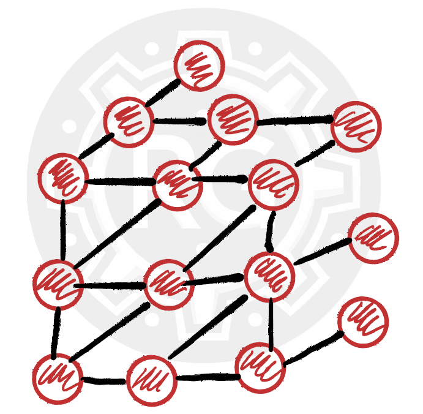
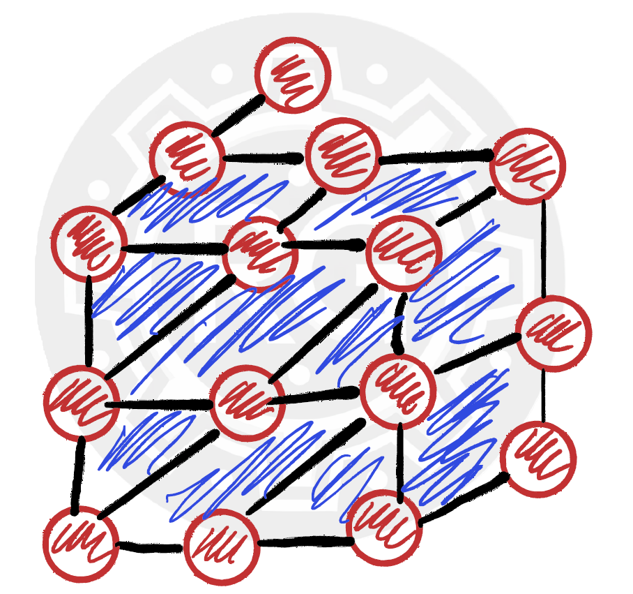
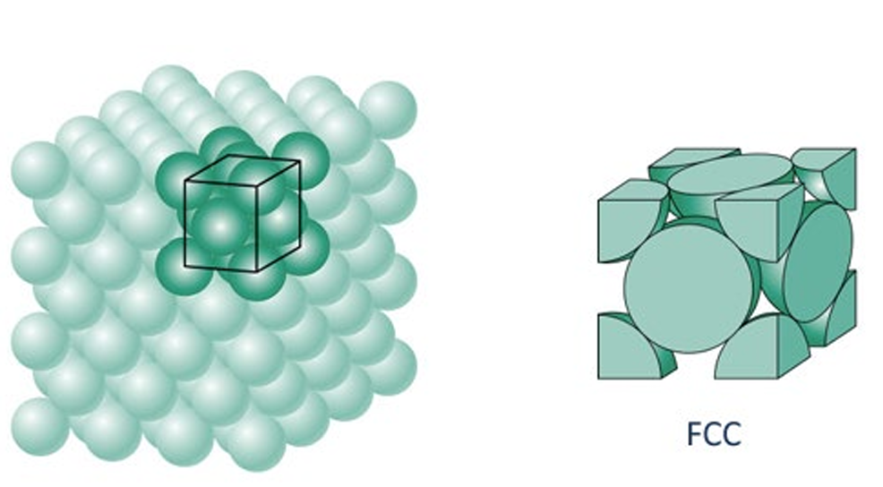
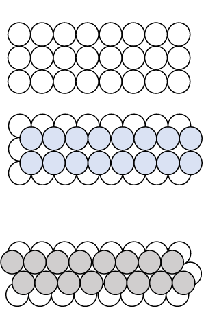

Crystal Structures in Metals

Understanding Crystal Structures in Metals Why is Crystal Structure Important in Metals? Metals are not just a collection of atoms randomly arranged—they have a well-defined crystal structure that determines their mechanical, electrical, and thermal properties. Understanding metallic crystal structures is essential in materials science, metallurgy, and engineering, as it helps predict:

What is a Unit Cell in Crystal Structures?
A unit cell is the smallest repeating unit that can fully describe the structure of a crystal lattice. In a crystalline material, atoms are arranged in a specific, repeating pattern with fixed distances between them. Instead of analyzing the entire crystal, we can focus on a small representative section that, when repeated in three-dimensional space, reconstructs the entire crystal structure. Why is the Unit Cell Important? It describes the entire crystal structure using the smallest possible volume. That helps predict material properties based on atomic arrangement. It is used in crystallography to understand bonding, density, and mechanical behavior. Understanding unit cells is essential for studying the mechanical and electrical properties of metals, ceramics, and other crystalline materials.
Metallic Crystal Structures and Atomic Arrangement
In metals, atoms arrange themselves in a three-dimensional pattern, but unlike other crystalline materials, they have free-moving electrons surrounding them. This means that the metallic bonds are not directional, allowing atoms to shift and pack together in different ways. Metal Packing and Structure Types Metals do not always arrange in a simple cubic structure; they can also adopt denser packing arrangements depending on the type of metal. The way metal atoms are packed determines many of the physical properties of the metal, such as: Strength, Ductility and Malleability, and Conductivity. One common arrangement, as shown in the figure, is the Face-Centered Cubic (FCC) Structure, where atoms are packed closely together to maximize density.Different Metals, Different Structures
Different metals have different atomic packing structures, influencing their mechanical and electrical behavior. Understanding these structures is essential in metallurgy and materials science, helping engineers design stronger and more efficient metal alloys.
Cubic Unit Cells in Metals
Why Do Most Metals Form Cubic Unit Cells? In most cases, metals crystallize into cubic unit cells because this structure allows for efficient atomic packing while maintaining mechanical stability. A cubic structure is characterized by:Types of Cubic Structures There are three main types of cubic crystal structures in metals:
Understanding the Structure of a Unit Cell
What Does a Unit Cell Look Like? When we extract a unit cell from a metal’s crystal structure, we see a repeating geometric arrangement of atoms. As shown in the figure: There is one atom in the center of the unit cell. There are additional atoms located at each corner of the cube. This is a representation of a Body-Centered Cubic (BCC) structure, where each unit cell consists of one full atom at the center and contributions from eight corner atoms. Why is This Important? The unit cell is the smallest repeating unit that defines the entire crystal structure. Understanding it helps us predict:Lattice Constants, Atomic Packing, and Deformation in Metals
What is a Lattice Constant? The lattice constant (a) is the side length of a unit cell in a crystal structure. It is directly related to the atomic radius (R) of the atoms that make up the structure. From the figure, we see that the relationship between the lattice constant and atomic radius is given by: a = (4 × R) / √3 This equation helps in calculating the size of a unit cell based on atomic size.How Many Atoms are in a Unit Cell?
The number of atoms per unit cell (N) is determined using the formula: N = Ni + (Nf / 2) + (Nc / 8) Where: Ni = Atoms completely inside the cell Nf = Atoms on the face of the unit cell (counted as ½ each) Nc = Atoms at the corners (counted as ⅛ each) Atomic Packing and Metal Deformation The density of atomic planes in a metal affects how easily it deforms. Why does this matter? When metals deform, atomic planes slide past each other. The densest atomic planes are where this sliding occurs most easily.Atomic Packing Factor (APF)
The atomic packing factor describes how much of a unit cell's volume is actually occupied by atoms. APF = (Volume of all atoms in the unit cell) / (Total volume of the unit cell) Higher packing factors mean tighter atomic arrangements, influencing material strength, ductility, and deformation behavior.Why is This Important?
Understanding lattice structure, atomic packing, and deformation mechanisms is essential in materials science and metallurgy. These properties directly influence how metals are used in engineering, manufacturing, and structural applications.
Face-Centered Cubic (FCC) Structure in Metals
One of the most common crystal structures found in metals is the Face-Centered Cubic (FCC) structure. Unlike the Body-Centered Cubic (BCC) structure, FCC does not have an atom in the center of the unit cell. Instead, it has: Atoms at each of the eight corners An additional atom on each of the six face centersHow Many Atoms Are in an FCC Unit Cell?
Using the unit cell atom count formula, the total number of atoms per unit cell in FCC is: N = Ni + (Nf / 2) + (Nc / 8) N = 0 + (6 / 2) + (8 / 8) = 4 atoms per unit cellWhy is FCC Important?
FCC is the most common structure in metals. It allows for high atomic packing efficiency (APF = 74%), meaning atoms are packed very closely together. This structure gives metals high ductility and excellent deformation properties.Examples of FCC Metals
Hexagonal Close-Packed (HCP) Structure in Metals
A third common crystal structure in metals is the Hexagonal Close-Packed (HCP) structure. Unlike Body-Centered Cubic (BCC) and Face-Centered Cubic (FCC), the HCP unit cell cannot be represented as a cube. Instead, it forms a hexagonal arrangement. When layers of atoms are stacked in an alternating pattern, we get the HCP structure.Key Characteristics of HCP:
Why is HCP Important?
HCP metals tend to be less ductile than FCC metals, meaning they are harder but less formable. They have good strength and corrosion resistance, making them useful in lightweight and high-performance applications (e.g., aerospace materials, medical implants). These three crystal structures (BCC, FCC, HCP) are the most common in metals and will be the primary focus in material science and engineering applications. Understanding how atoms arrange in these structures is essential for predicting mechanical properties, strength, and formability.
Beyond Cubic and Hexagonal: Exploring Other Crystal Systems
While cubic and hexagonal structures dominate many metals and minerals, there are other crystal systems that differ in shape and atomic arrangement. These structures play a crucial role in determining a material’s mechanical, electrical, and optical properties.Tetragonal Crystal System
The tetragonal system is similar to the cubic system, but with one elongated axis.Characteristics: